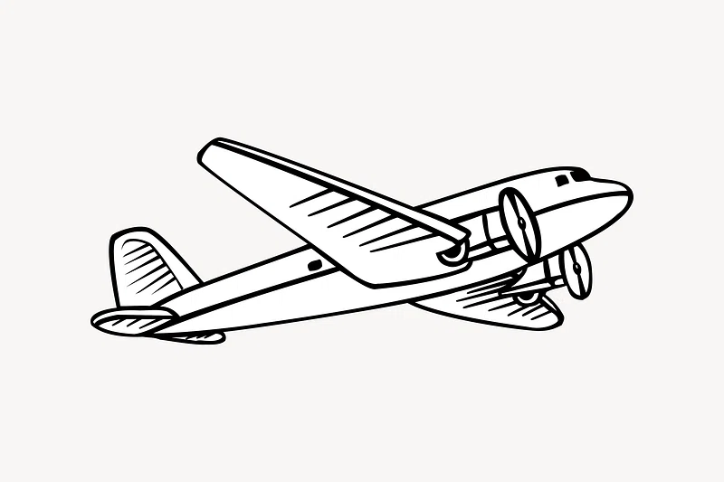

David Merrick
Vad är ett flygbesök?
Ett flygbesök innebär att du som pilot ska valideras, det betyder att för att du ska få lov att kunna flyga måste du nå vissa krav. För att testa och se om du når dessa krav kommer du att träffas av en tränad läkare som kommer att testa dig.
Allmän info
Hos oss kan du göra undersökning för:
- Flyg( klass 1,2, LAPL, Kabin).
- Dyk.
- Lastbil/ Buss/ Taxi.
- Sjöfart.
- Järnväg; AGS/ TSD drift, Lokförare.
- Fallskärm.
Att ha med till besöket:
- -Giltig Fotolegitimation+ Ifylld Hälsodeklaration för respektive undersökningskategori.
- -För piloter; gärna kopia av tidigare mediciniskt intyg och flygdagbok.
- -Optiker recept om du bär glasögon/linser. Gäller samtliga yrkeskategorier( se allmän info). Får inte vara äldre än 2 år gammalt. För klass 1 piloter ska det framgå på optiker receptet utöver uppgifter om synskärpa även- Sfär,cylinder, Axel och Nära( Add).
- -Ta med linser el glasögon ifall du har några.
- -Läkemedelslista, ifall du står på läkemedel.
- -Journalunderlag, ifall du haft vårdkontakter/ varit inneliggande.
Kontakta mig